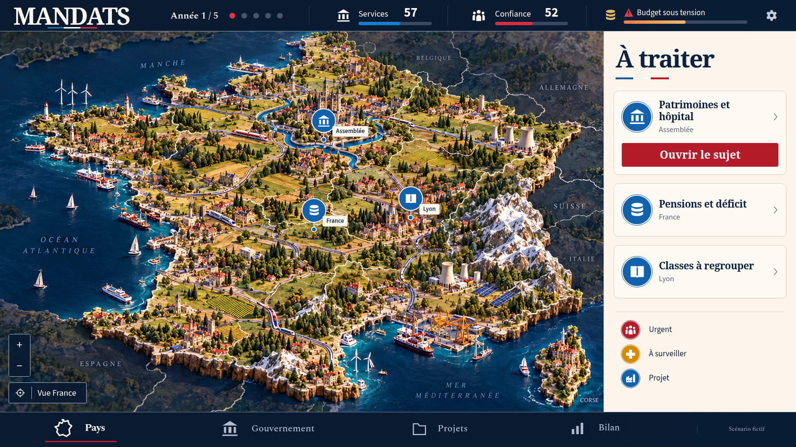
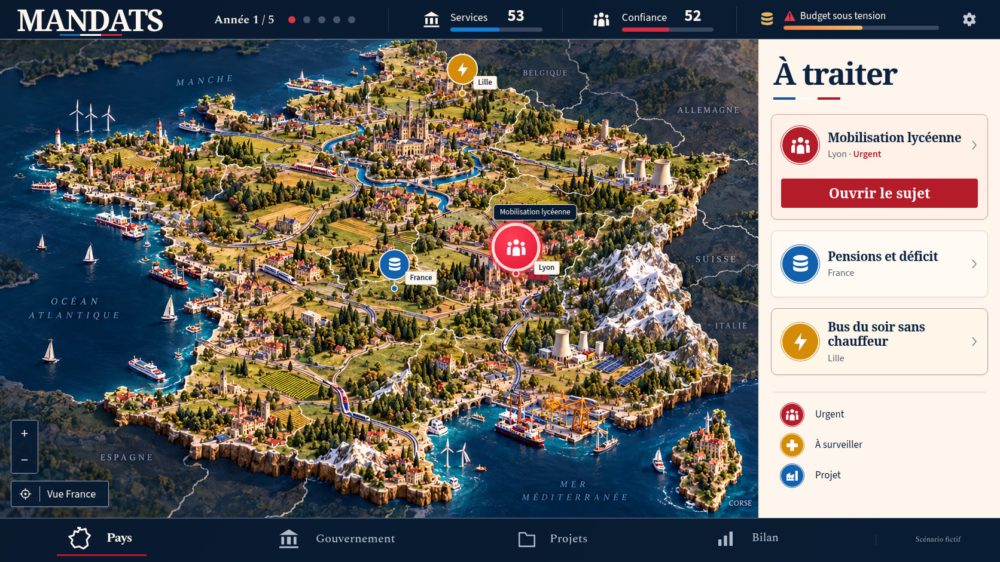
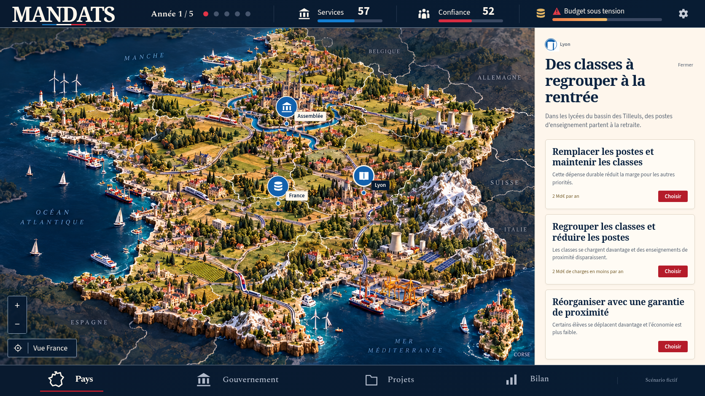
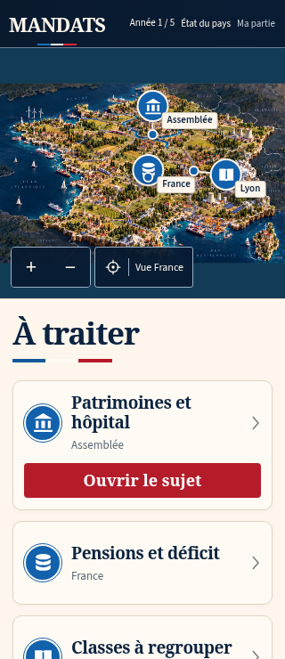
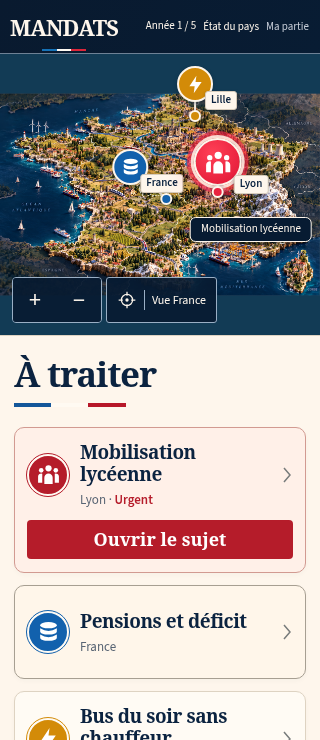
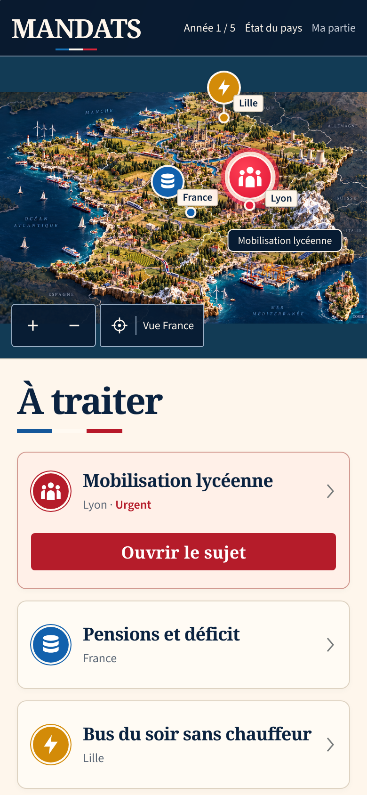

La carte reprend l’illustration de référence. Les zones des anciens repères, étiquettes et commandes ont été retouchées pour accueillir les éléments interactifs ; les pixels de l’illustration hors de ces zones sont conservés. Les scores, l’année et les sujets affichés proviennent de la partie jouée : ils peuvent différer de l’état présenté dans la maquette.
Vue nationale sur ordinateur
Comparer le cadrage de la France, les villes, les reliefs et les ports, puis l’en-tête, le panneau « À traiter » et la navigation. Cliquer sur une image pour l’ouvrir à sa taille d’origine.



Après la décision sur les classes
Le repère urgent de Lyon et la mobilisation apparaissent dans la partie. Les autres sujets et les indicateurs suivent les conséquences de la décision.


Un sujet ouvert
Le panneau présente les choix disponibles pendant que la carte et ses repères restent visibles.

Mobile, écran compact et WebKit
Sur les petits écrans, le panneau des sujets se place sous la carte. Les deux captures de chaque colonne montrent le début de partie, puis la mobilisation.


Compact — 320 px






WebKit


